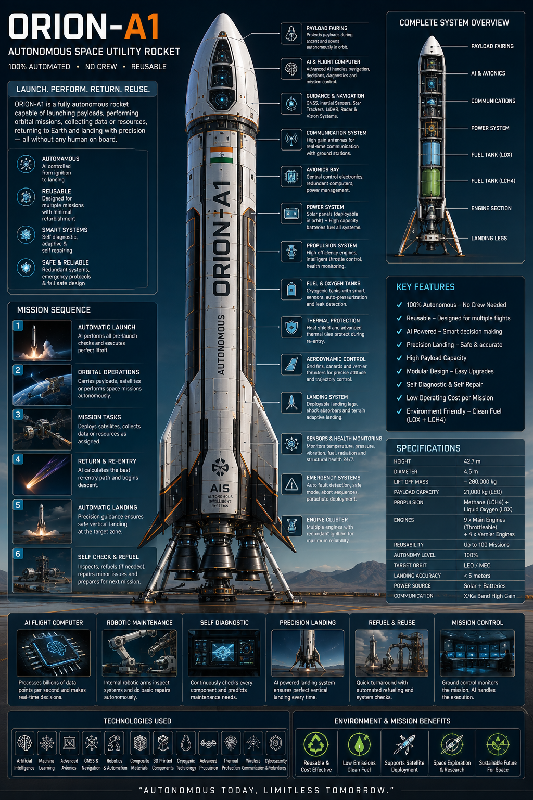
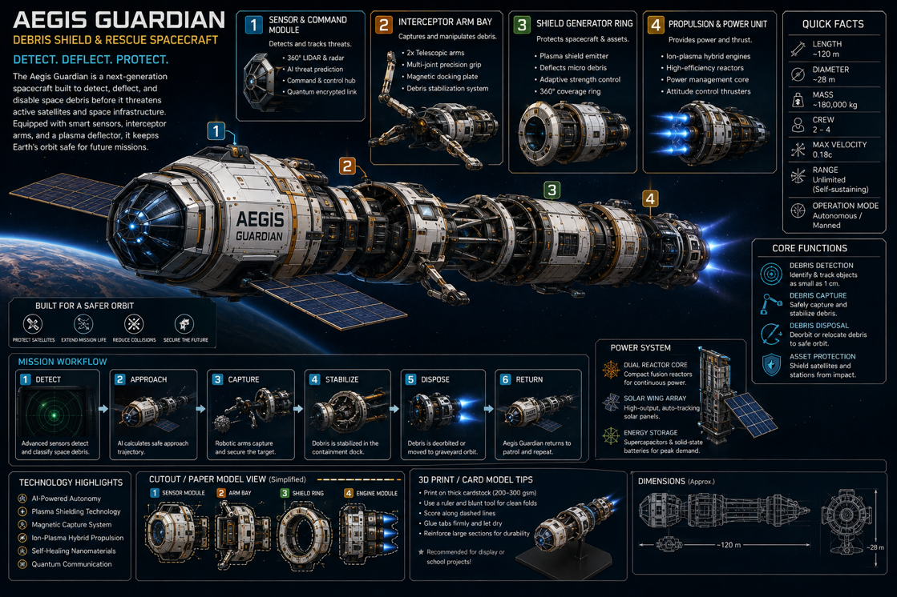
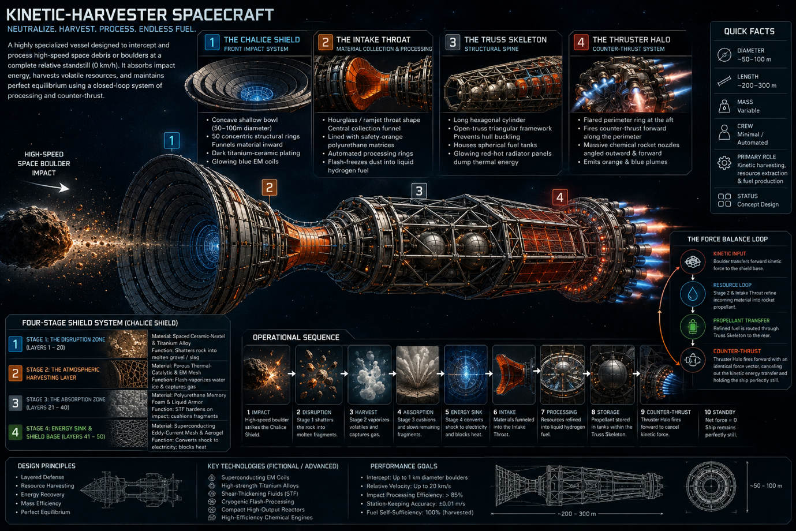
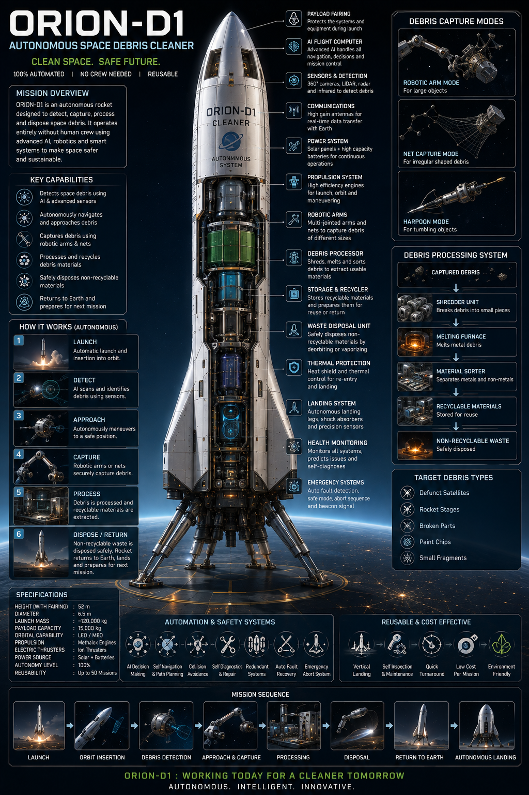
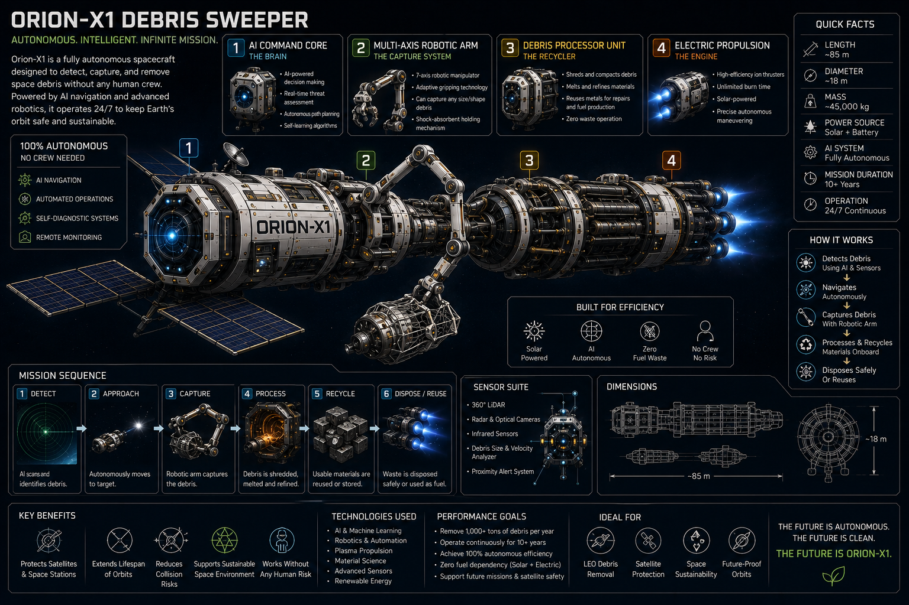
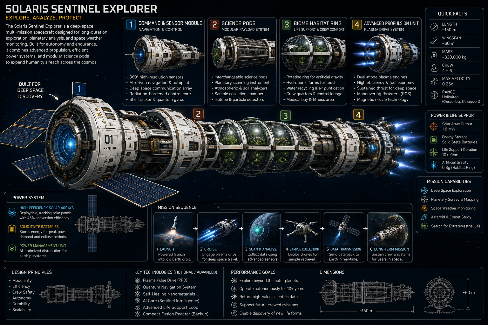

100% Autonomous
From launch to landing, our craft navigate, decide, and execute missions without human crews.
Autonomous Space Systems
Orion Nexus designs the next generation of crewless spacecraft — from reusable launch vehicles and debris sweepers to deep-space explorers and orbital guardians.
Every Orion Nexus vehicle is built around the same core principles: full autonomy, reusability, AI-driven decision making, and sustainable operation in Earth orbit and beyond.
From launch to landing, our craft navigate, decide, and execute missions without human crews.
Vertical landing, self-inspection, and automated refueling keep vehicles ready for dozens to hundreds of flights.
Debris detection, capture, recycling, and shielding technologies make space safer for satellites and future missions.
Long-duration explorers carry closed-loop life support, science pods, and plasma drive systems to the outer solar system.
Six spacecraft classes. One unified vision for autonomous space operations.

Autonomous utility rocket for payload launch, orbital service, and precision return.

Debris shield and rescue spacecraft for active satellite and station protection.

High-speed boulder interceptor that harvests kinetic energy and converts debris to fuel.

Autonomous debris cleaner with capture, processing, and safe disposal systems.

Long-endurance debris sweeper operating 24/7 with solar-electric propulsion.

Deep-space explorer with rotating habitat ring and modular science pods.